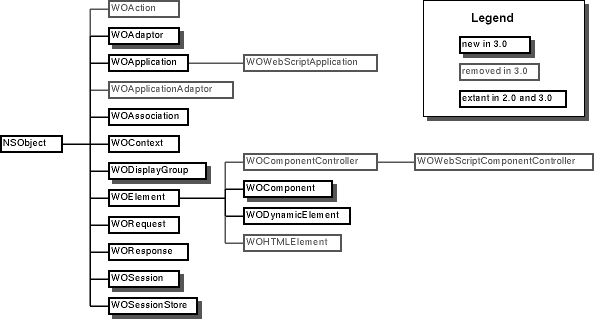

WebObjects 3.0: Changes from 2.0
WebObjects Release 3.0
Changes from Release 2.0
10/20/96
Topics
Introduction
The 3.0 release of the WebObjects family of products differs in a number of ways from the 2.0 release. Changes were made to support new features (support for Java, enchanced interfaces to some dynamic elements, and so on), to make it easier to use WebObjects (improved design for state management, simplification of the WebScript syntax, and so on), and to make WebObjects integrate better with NeXT's Enterprise Objects Framework.
If you developed applications based on WebObject Release 2.0, you'll find this document a useful summary of the differences between the two releases. With the information summarized here and described in detail in the WebObjects Developer's Guide, we hope you'll find the transition to WebObjects Release 3.0 relatively easy and clearly worth the effort.
For a checklist of steps to complete for porting WOF 2.0 applications to WOF 3.0, see Porting to WebObjects 3.0: A Checklist.
NOTE: All changes described in this document also apply to WOF Release 3.1.
WebObjects Framework Class Hierarchy
The class hierarchy in WebObjects 3.0 has changed somewhat from that in WebObjects 2.0. This diagram summarizes the changes.

Development Tools
WebObjects Builder
The WebObjects Builder application has markedly changed since the prerelease version that was distributed with WebObjects 2.0. In particular, the following improvements have been made to the user interface:
- You can now display a component's script file at the same time as its HTML template. The main display of the component window always shows you the component's variables and methods as well as the HTML template. Choose Tools->Script->Script or press the script button on the component window's toolbar to see the entire script file.
- To bind an element, you can simply select the element and double-click a variable or method. You no longer have to type the name of the variable in the inspector window.
- The bindings inspector now lists all of a dynamic element's attributes instead of listing only the required attributes.
- You can create a dictionary type (or class) without first having to create variables. Choose Classes from the Tools menu, enter a name for the class, and then enter names for the class's attributes.
- Drag-and-drop database support and a wizard for creating applications that access a database have been added. These are described in more detail later in this document.
- Support for creating reusable components has been improved. The page inspector now lists all of a component's variables. Using this interface, you can select which variables should be exported, meaning that the parent component can bind to them.
Project Builder
Project Builder now includes a project type for compiled WebObjects applications. When you create a new application with a project type of "WebObjects," Project Builder populates the project directory with the necessary files (PB.project, makefiles, template files, and main.m). In addition, you can add component files (".wo"), and they will appear under Interfaces; when you double-click the icon for these files, they are opened in WebObjects Builder.
You can use Project Bulder to build, edit, and search WebObjects applications, just as you can with any other type of application. The WebObjectsApplication.projectType bundle is installed in NEXT_ROOT/NextDeveloper/ProjectTypes when WebObjects is installed.
Note: Currently there is no synchonization with WebObjects Builder. For example, if you create a new component in WebObjects Builder, Project Builder does not automatically add it to the project. You must add each new component yourself.
Java Client-Side Component Integration
WebObjects Framework 3.0 supports the synchronization of state between Java applets in the client browser and a WebObjects application in the server without requiring a page reload. It also enables client-side applets to trigger actions in an object on the server side of the connect. This capability is new.
A Java applet can invoke an action in the server-side WebObjects application that results in a new page loaded into a browser. But this feature also permits the client browser and server to exchange data without the need for page reloads. Browser applets can use this feature to synchronize state with the server or to request and receive small amounts of extra data or state. For example, if a user incorrectly enters a password in a Login page, the browser can simply display an "Incorrect password" message on the same page.
Java applets form controls on the client's page: text fields, buttons, browsers, check boxes, and so on. The WOApplet dynamic element, which "represents" these applets on the server side, is extended to you to specify the class of an applet, its association class, and bindings or initial values for the applet's keys and actions. An applet's association object serves as an intermediary in passing values back and forth between the WebObjects application and the applet.
For example, you can specify a text field applet in a WOApplet dynamic element in a "wod" file as in the example below:
PASSWORD : WOApplet {
code = "next.wo.client.controls.TextFieldApplet.class";
codebase = "/WebObjects/Java";
width = "200";
height = "20";
associationClass = "next.wo.client.SimpleAssociation";
stringValue = nameString;
echoCharacter = "*";
action = "validateUser";
};
Note: WebObjects Builder now integrates support for this feature; check future versions of WebObjects Builder documentation for details.
This code specifies that the WebObjects application should download the TextFieldApplet Java class to the client. It will also download the class SimpleAssociation, the standard Association subclass for NeXT-provided applet controls, which will serve as an intermediary in synchronizing the value (in this case, the stringValue) between the WebObjects application and the TextFieldApplet. It also specifies that the action "validateUser" is to be invoked when the user presses Return.
For 3.0, essentially each Java client-side control on the browser page will be an applet. Several other Java objects (not visible on the browser page) coordinate the actions of the individual applets, synchronize their values as needed, and communicate with the WebObjects application on the server side.
Currently, only a handful of Java Client-Side Component classes are public. One of these classes, Association, is an abstract class that defines the behavior of Association objects. Another public class is SimpleAssociation, a concrete subclass of Association. If you want to use any of the applets provided by NeXT, you can use SimpleAssociation. If you have created your own applet control or have "found" one, you can make your applet work with SimpleAssociation, or you can make a custom subclass of Association that "pushes and pulls" values from the keys and actions of the applet. Association subclasses must also invoke action messages when it is time to trigger that action.
A simple example of Java client-side communication is CapitalizeString.woa, an example application provided with WebObjects. This application uses three applets. It lets a user enter a word in one text field, and when the user clicks a button, returns an uppercase version of the word in another text field. This is done without a page reload.
One limitation to Java client-side support is that the data received from a request cannot derive from both applets and HTML forms on the same page.
Changes to WebObjects Pro
WebObjects Pro 3.0 has been redesigned for developing dynamic, web-based applications for low-traffic sites. It now includes:
- Built-in support for two-tier database access
- Rapid database application development with WebObjects Builder
- Integration of existing C or C++ libraries
- Support for compiled C, C++, or Objective-C code, as well as WebScript
Because WebObjects Pro is intended for smaller sites, scalability and performance features that were in previous releases are not included in WebObjects Pro 3.0. For a complete description of the features in WebObjects Pro, see
Differences Between WebObjects Enterprise and Pro.
Database Integration
Enhancements
WebObjects 3.0 provides two enhancements to Enterprise Objects Framework integration:
- Built-in support for minimal enterprise object state archiving. To store state in the page (or in cookies) in WebObjects 2.0, you had to provide custom implementations of the methods initWithCoder: and encodeWithCoder:. In WebObjects 3.0, this is no longer necessary.
- Per-session object graphs.
Some applications require that each session has its own object graph. For example, consider an application that updates customer data. Suppose one user changes a customer's credit limit. Other users shouldn't see the new credit limit until it's successfully saved in the database. To ensure that uncommitted changes are only visible to the user who made the change, each session (user) needs its own object graph to operate on.
In WebObjects 1.0 and 2.0, an application required a database connection for each object graph. If you limited your application to one database connection, uncommitted changes made by one user were visible to all the other users too. In WebObjects 3.0, you can have an object graph for each session using a single database connection .
New Features Summary
WebObjects 3.0 provides graphical development tools for creating web-based database applications. With little or no coding you can map database records to objects and then bind the objects to elements in your web pages.
In WebObjects 2.0, WebObjects Enterprise included Enterprise Objects Framework database integration technology, but you had to write scripts or compiled code to use it. In WebObjects 3.0, WebObjects Builder provides drag-and-drop support for:
- Displaying data from a database in your web pages
- Updating database records
- Searching the database based on arbitrary criteria
Both WebObjects Enterprise and WebObjects Pro include EOModeler (an application for defining a database-to-object mapping) and the Enterprise Objects Framework library of classes. For information on EOModeler and Enterprise Objects Framework classes, see the Enterprise Objects Framework Developer's Guide and Reference.
Note that some of the Enterprise Objects Framework capabilities are limited in WebObjects Pro. For a complete description of the features in WebObjects Pro, see "Differences between WebObjects Enterprise and Pro," accessible from the WebObjects home page.
More On New Features
The emphasis of WebObjects 3.0 is on providing an easy-to-use, graphical development environment for integrating databases with web applications. WebObjects Builder delivers the bulk of this environment by providing the following database integration features:
- The Database Wizard
- Display Groups
- An Editing Context
Each of these features is described below.
The Database Wizard
The Database Wizard is the simplest way to define how a WebObjects application interacts with a database. Running the wizard performs all the setup necessary to fetch database records and display them in a web page. Depending on the configuration you choose, the wizard may also provide database search forms in which users can specify record-matching criteria and forms for inserting, updating, and deleting database records.
To use the Database Wizard, choose Database Wizard from the Tools menu and perform the steps as the wizard prompts you. When the Database Wizard finishes, simply save your WebObjects application, and run it. If the web page created by the wizard doesn't have all the features you want, use WebObjects Builder to extend or modify it. Pages created by the Database Wizard provide great jumping off points for web-based database applications.
Display Groups
The WebObjects Framework includes a new class, WODisplayGroup, whose instances provide a simple interface for interacting with relational databases in terms of objects. WODisplayGroup objects--also referred to as display groups--use classes defined in Enterprise Objects Framework to:
- Fetch from the database.
- Insert, update, and delete database records.
- Build qualifiers from user input and order search results.
- Manage batches of search results.
In your code, you work with objects. WODisplayGroup and Enterprise Objects Framework take care of converting operations on objects to database operations on records.
As part of its tasks, the Database Wizard creates a display group object and adds it to your application as a component variable. To create a display group without using the wizard, perform the following steps:
- Open a model file in EOModeler.
- Select an entity in the Model Editor.
A display group manages objects associated with a single entity. For example, if you choose the Movie entity, the resulting WODisplayGroup operates on Movie objects. Note, however, that you can also access other kinds of objects through a Movie object's relationships. For example, if a relationship between a MOVIE table and a STUDIO table can be expressed with an join, you could access Studio objects associated with a particular Movie object. For information on creating relationships, see the chapter "Using EOModeler" in the Enterprise Objects Framework Developer's Guide.
- Drag the entity into the component window to which you want to add a display group.
In most cases, you can use the Database Wizard to create a display group for you, but you might add one as described above if you don't want to use the wizard's layouts.
Editing Context
The WebObjects WOSession class provides access to an EOEditingContext object. You generally can't see the EOEditingContext object in WebObjects Builder, but some of the scripts created by the Database Wizard reference it. For example, if you run the Database Wizard specifying the "Selected Record" layout, the Database Wizard creates a saveChanges method in the component script that includes the following expression:
[[[self session] defaultEditingContext] tryToSaveChanges]
Depending on your language preference (set in the Preferences panel), the expression may have the following form instead:
self.session.defaultEditingContext.tryToSaveChanges();
This expression sends a tryToSaveChanges message to the session's defaultEditingContext variable. This default EOEditingContext object manages graphs of objects fetched from the database, and all changes to the database are saved through it. For more information, see the EOEditingContext class specification in the Enterprise Objects Framework Reference.
Dynamic Element Enhancements
Templates for Dynamic Elements
Optional templates for dynamic elements are no longer allowed. For example, with WebObjects 2.0 you could position a dynamic element in the HTML page using either of these approaches:
Without template <WEBOBJECT NAME="MY_TEXTFIELD"></WEBOBJECT>
With template <WEBOBJECT NAME="MY_TEXTFIELD">
<INPUT TYPE="TEXT">
</WEBOBJECT>
Now, only the first approach is allowed.
In WebObjects 2.0 the optional template was merged with its associated dynamic element, so it was possible to declare some attributes in the template and other attributes in the dynamic element:
<WEBOBJECT NAME="MYFORM">
<FORM TARGET=MYTARGET>
...
</FORM>
</WEBOBJECT>
In WebObjects 2.0 the MYFORM dynamic element would take its action from associated declarations file and its target from the template declared above. In WebObjects 3.0, this no longer happens, so the target attribute (if present) must now be assigned in the declarations file and the FORM template removed from the HTML file.
In WebObjects 2.0, using a template was recommended so that you could check the layout of elements in a browser, even though the HTML page was not part of a running WebObjects application. In WebObjects 3.0, WebObjects Builder lets you see the layout of the dynamic elements directly; the optional template is no longer needed. Removing this feature helps improve the overall performance of dynamic element generation and it reduces the code complexity for better quality.
Note: You can still provide templates for static elements that are contained within a dynamic element. For example:
<WEBOBJECT NAME="MY_FORM.">
<INPUT TYPE="TEXT">
</WEBOBJECT>
The only restriction is that you can no longer provide a template for the dynamic element itself.
New or Revised Elements
Here's a summary of the changes and additions made to the roster of dynamic elements in release 3.0. See the section "Dynamic Elements" in the WebObjects Developer's Reference for more complete details.
New WOJavaScript and WOVBScript elements
These new elements let you embed scripts written in JavaScript and VBScript code in dynamically generated pages. Each element give you the option of hiding the script in an HTML comment so that older browsers that don't support these languages can ignore the scripts without error.
Change to WOApplet
WOApplet's attribute list has changed only superficially (with the addition of associationClass and codeBase ), but its capabilities are now vastly expanded. See "Java Client-Side Component Integration" above for the details.
Change to WOForm
WOForm now has a multipleSubmit attribute, that lets you put more than one WOSubmitButton elements in the same form, each with its own action.
Change to WOFrame
For convenience, WOFrame now has a pageName attribute, which lets you specify the name of the component that will provide the frame's content.
Changes to WOString
WOString has three new optional attributes: escapeHTML , dateformat , and numberformat .
escapeHTML lets you control whether WebObjects will try to prevent a browser from interpreting HTML tags or not. With this attribute, you can control whether WOString containing "<B>a bold idea</B>" is displayed in the browser as "<B>a bold idea</B>" or " a bold idea ".
dateformat , and numberformat specify the format used to express a WOString's value. Using dateformat , you can control whether a date appears as 12/01/96; Sunday, December, 1, 1996; or some other format, for example. With numberformat , you can express a number in a monetary format ($10,000.00), determine how negative numbers will appear, and so on.
Change to WOTextField
WOTextField, like WOString, has these new optional attributes: dateformat and numberformat .
dateformat , and numberformat specify the format used to express a WOString's value. Using dateformat , you can control whether a date appears as 12/01/96; Sunday, December, 1, 1996; or some other format, for example. With numberformat , you can express a number in a monetary format ($10,000.00), determine how negative numbers will appear, and so on.
Change to WOConditional
WOConditional now has an optional negate attribute:
WOConditional {
condition = YES|NO;
[negate=YES|NO;]
};
The negate attribute lets you use the same test to display mutually exclusive information:
<HTML>
<WEBOBJECTS NAME="PAYING_CUSTOMER">Thank you for your order!</WEBOBJECTS>
<WEBOBJECTS NAME="WINDOW_SHOPPER">Thanks for visiting!</WEBOBJECTS>
</HTML>
PAYING_CUSTOMER: WOConditional {condition=payingCustomer;};
WINDOW_SHOPPER: WOConditional {condition=payingCustomer; negate=YES;};
- payingCustomer {
if (/* ordered something */) {
return YES;
}
return NO;
}
In WebObjects 2.0, you had to define two methods (for example payingCustomer and browser) to accomplish what in WebObjects 3.0 only takes one method.
Change to WOHyperlink
WOHyperlink has an optional fragmentIdentifier attribute:
WOHyperlink {
[string=aString;]
action=aMethod | href=aURL | pageName=aString;
[fragmentIdentifier=anchorFragment;]
[target=frameName;]
[disabled=YES|NO;]
...
};
This attribute lets you specify a location within the destination document. For example,
<HTML>
<WEBOBJECT NAME=ALINK></WEBOBJECT>
</HTML>
ALINK: WOHyperlink {
string = "[ Book of all Knowledge ]";
pageName = "IRS1040";
fragmentIdentifier= "ScheduleA";
};
The location in the destination document is marked in the standard way (for example, <A name="ScheduleA"> ScheduleA </A> ). The URL generated by the WOHyperlink has the format, "http://url#fragmentIdentifier".
State Management
WebObjects 3.0, with the new WOSession class, introduces a simplified system for maintaining session state in an application. The session and persistent keywords from WebObjects 2.0 are now obsolete. Thus, a component no longer stores persistent state directly, as it did in Release 2.0. Instead, it saves and restores persistent state to and from a WOSession object.
In Release 3.0, each client session within an application has a WOSession object to hold its state. The state is encapsulated in the instance variables of the WOSession object. You can script the WOSession object by adding a Session.wos script file to your application (just as you script the WOApplication object by adding an Application.wos file). Alternatively, you can create a subclass of WOSession for your session's state. See CyberWind for an example of how to use the new state management facilities.
Global variables--that is, variables that are global to all sessions of the application--are declared the same way in Release 3.0 as in Release 2.0. (That is, they are declared as instance variables of the application class, either in the Application.wos script or in the compiled subclass of WOApplication.)
The WOSession class declares an awake method where you can put code you want to have executed at the beginning of each transaction the session is involved in.
In Release 3.0, WOSession objects are stored in a WOSessionStore object. The WOSessionStore class supports the storing of state in the server, in the client (using archiving and hidden fields--known as "state in the page"), or by using cookies. A WOSessionStore object is smart, storing state in the server if the client does not support cookies, for example.
WebScript Changes
The following changes have been made to WebScript:
- The keywords persistent, session, and action have been dropped.
- A syntax variation similar to Visual Basic is now supported.
- Scripts can now implement init and dealloc to initialize and deallocate associated objects.
- Objective-C-style categories and scripted classes have been added.
Because of page caching and the new classes provided for storing and managing state (WOSession and WOSessionStore), there is no longer a need for the session and persistent variables in an application or component. See the State Management section of this document for more on this subject.
The action keyword in WOF 2.0 was used to identify an instance of the WOAction class for child-parent component callbacks. Because this class has been removed for 3.0, the keyword is no longer needed. For parent action invocation, use instead WOComponent's performParentAction:. See Better Support for Reusable Components in this document for an example.
WebScript supports a syntactical variation similar to Visual Basic and Java. This "modern syntax" is emitted by WebObjects Builder when you set the appropriate Language preference.
The init and dealloc methods are identical in purpose to their Objective-C counterparts. In them you initialize and deallocate the WOApplication, WOSession, or WOComponent object associated with the script. Note that init is invoked only once during an object "lifetime": when an application is created, when a session begins, and when a page or component is created (but not when it is restored). The awake method, on the other hand, is invoked in an object when it begins participating in a cycle of the request-response loop.
You can add methods to WOF 3.0 classes (and derived classes) using categories. The syntax for creating categories is similar to Objective-C's. You can also create subclasses of Objective-C classes in your scripts. See "Categories" and "Scripted Classes" in the "Using WebScript" chapter.
Initialization and Request Handling
Summary
WebObjects 2.0 provided the following delegate-style methods as "hooks" into the request-response loop:
- willPrepareForRequest:inContext:
- didPrepareForRequest:inContext:
- willGenerateResponse:inContext:
- didGenerateResponse:inContext:
WebObjects 3.0 functionally replaces the above methods with two WOComponent methods that scripts can implement and subclasses can override:
- takeValuesFromRequest:inContext:
- appendToResponse:inContext:
Subclasses of WOComponent can also override the (previously private) invokeActionForRequest:inContext: to implement special behavior during the action-invocation phase of the request-response loop.
In addition, the awake method implemented by applications and components can now also be implemented by WOSession objects (in a Session.wos script at the top level). The session awake performs initializations for the session object that are in effect for a cycle of the request-response loop.
A sleep method now complements the awake method, and is invoked at the end of each request-response loop in the application and session objects, and in the component objects involved in request handling. It permits the receiving object to perform any clean-up tasks, such as deallocating variables initialized in awake.
Discussion
A major design change between WebObjects 2.0 and WebObjects 3.0 motivates the shift from delegate-style to overriden methods for request handling. WOComponent objects are now their own controllers, and do not rely on external "controller" objects to inform them of phases in the request-response loop.
Every component in a WebObjects application is an instance of a WOComponent subclass. If a component is implemented in WebScript, the application at run time instantiates an object from a special WOComponent subclass and adds to it the code in the ".wos" file. Objective-C and Java components must be implemented explicitly as subclasses of WOComponent.
The takeValuesFromRequest:inContext: method is invoked before the application stores user input for the request (and hence is functionally related to willPrepareForRequest:inContext:). A common purpose for overriding this method is to get request and context information, especially information that might affect how the request is to be handled. If, however, in your implementation of this method you invoke super's takeValuesFromRequest:inContext: first, you can manipulate the user input after it has been assigned to variables of the request component. Thus:
- willPrepareForRequest:r inContext:c {
// code A
}
- didPrepareForRequest:r inContext:c {
// code B
}
is equivalent to:
- takeValuesFromRequest:r inContext:c {
// code A
[super takeValueFromRequest:r inContext:c];
// code B
}
The effect of invoking super in the other request-handling methods is similar. After any such invocation, the work intended (taking values from the request page, invoking the request page's action method, and completion of the HTML response) is largely completed.
The appendToResponse:inContext: method is invoked before the application generates HTML code for the response. (Of course, if you invoke super's method first, you can have the HTML code generated first.) In your implementation of this method, you could add to or modify the HTTP headers or otherwise manipulate the response. As the method name suggests, you can also append text and HTML code to the response. You can also do some pre-response calculations bound to fields in the response page, as does the following CyberWind example, which computes the total amount of a sale:
- appendToResponse:aResponse inContext:aContext
{
id sailboards = [[self session] selectedSailboards];
id count = [sailboards count];
id i;
total = 0;
for (i = 0; i < count; i++) {
sailboard = [sailboards objectAtIndex:i];
total = total + [[sailboard
objectForKey:@"price"] intValue];
}
[super appendToResponse:aResponse inContext:aContext];
}
Note that appendToResponse:inContext: as implemented here fulfills a purpose similar to willGenerateResponse:inContext:. The invocation of super's method should occur as the last thing.
The default behavior of invokeActionForRequest:inContext: is to execute an action and return the requested page. Override this method if you want to modify this behavior, such as substituting a page other than the requested one. (This substitution, however, cannot happen on an initial request because in that case neither takeValuesFromRequest:inContext: or invokeActionForRequest:inContext: is invoked.)
Use of WOApp Global Discouraged
WebObjects Release 3.0 includes expanded language support, including support for Java. Since the Java language does not recognize global variables, the use of the WOApp global (which represents an application's instance of WOApplication) is now discouraged. The use of WOApp in components that are scripted in WebScript is still allowed, but is also discouraged.
The WOComponent class declares the application, session, and context convenience methods that make it easy to refer to these global resources from a declarations file or a script. For example (from the Footer component of the CyberWind example):
TOTAL_REQUESTS:WOString {value = application.requestCount};
SESSION_REQUESTS:WOString {value = session.requestCount};
The values of the WOStrings are being set to the number of requests stored in the application's requestCount variable and the session's requestCount variable.
URL Syntax for WebObjects Applications
The URL syntax for WebObjects applications in Release 3.0 is:
http://<HTTP_server_name>/<CGI_scripts_directory> /WebObjects[- <WebObjects_version>][.exe|.dll]/ <Application_name>[.woa][[/-/<Page_name>.wo | /<Session_ID>/ <Page_name>.wo/<Context_ID>/<Element_ID> [/<Application-instance_number>][/ <application_server_name>]]][?Query_string]
Application Directory Name
WebObjects application directories now have the suffix ".woa". This change allows application directories to be associated with the WebObjects Builder application. On platforms that support it, double-clicking the directory name will cause WebObjects Builder to open the application for editing.
Application Timeout
WOApplication now has a setTimeOut: method to set the period of inactivity within an application before it terminates execution. It also offers a timeOut method to return this period.
Better Support for Resource Management and Localization
Resource Paths and URLs
WOApplication and WOComponent include two methods for obtaining the paths and URLs of components and other resources:
- pathForResourceNamed:ofType:
- urlForResourceNamed:ofType:
The first argument is the name of the resource and the second (the "type") is its extension. For example:
id anImagePath = [otherComponent pathForResource:@"CompanyLogo" ofType:@"gif"];
Component Templates
WOComponent incorporates support for obtaining component templates: object graphs of static and dynamic elements that is associated with a particular component. The method templateWithName: returns a template cached by the application for a component. WOComponent also includes the method templateWithHTMLString:declarationString: that, given the contents (as NSStrings) of an ".html" file and a ".wod" file, creates and returns a template.
Localization
Localization in WebObjects works off an array of languages stored in the WOSession object (using setLanguages:). The order of languages in the array indicates the preferred order. The language names in the array should map to Language.lproj subdirectories of component directories . Thus, if there is a @"French" item in the array, there should be a French.lproj subdirectory. The ".lproj" directories should contain everything that has localized content: ".html" files, ".wod" files, ".strings" tables, and images. Currently, you must manually create ".lproj" subdirectories.
The ".strings" file contains a simple property list mapping common keys to words, phrases, or sentences in a particular language. For instance, a Main.strings file in English.lproj might have the following content:
{
buttonTitle = "Submit your request";
}
The Main.strings file in French.lproj would have the following:
{
buttonTitle = "Soumettez votre requete";
}
To access a localized string from a string table, use the stringForKey:inTableNamed:withDefaultValue: method. (The last argument allows you to substitute a default value in case there is no value for a particular key.) The application first looks for resources in non-localized, then in localized ".lproj" directories, so be sure you don't have duplicate files in non-localized locations when localization is supposed to occur.
Note: You can determine the language of the request sender by getting the value of the WORequest object's "accept-language" header. This returns a two-character value ("en", "fr", and so on) that you can then map to the language subdirectory.
Better Support for Reusable Components
The mechanism whereby a reusable component invokes a method in its parent component has been improved and simplified. These changes obsolete the WOAction class and the WebScript action keyword.
For Release 3.0, a child component can invoke its parent's action method by using the performParentAction: method declared by WOComponent. For example (see the Component example for the complete code):
Parent Component
<HTML>
<WEBOBJECT NAME = "PALETTE"></WEBOBJECT>
</HTML>
--------------------------------------------------------------
PALETTE: Palette {
selection = number;
callBack = "displaySelection";
};
--------------------------------------------------------------
- displaySelection
{
/* display the selection identified by number */
}
--------------------------------------------------------------
Child Component
- click /* this is the child's action */
{
selection = /* some value */;
/* now invoke the parent's action */
return [self performParentAction: callBack];
}
Porting to WebObjects 3.0: A Checklist
The following checklist serves as a guide to the major porting tasks you must complete when you're converting WebObjects 2.0 applications to WebObjects 3.0.
Application Extension
Add the extension ".woa" to the application directory name. For example, "MyCoolApp" would become "MyCoolApp.woa".
Initialization
WebScript now supports init in addition to awake as an initialization method in application, session, and component scripts. You may find it convenient to convert many of your awake methods in your scripts to init. Each init method must have the following structure:
- The first message should be an invocation of super's init method.
- The last statement should be" return self".
An example:
- init {
[super init];
someVar = aValue;
return self;
}
References: Initialization and Request Handling
Parent-Child Callbacks (action Keyword)
The WOAction class and WebScript's action keyword are obsolete in 3.0, so you should change the code that uses them. See Better Support for Reusable Components for an example.
persistent Variables
In WebObjects 1.0 and 2.0, you could use the persistent keyword in scripts to mark page or component variables whose values you want WebObjects to maintain for the life of a session. WebObjects 3.0 obsoletes WebScript's persistent keyword and provides a simpler system for maintaining component variables.
In 3.0, as a user navigates from page to page in a WebObjects application, a certain number of previously visited pages are automatically cached on the server. If the user requests a previously visited page, WebObjects returns the page from its cache instead of creating a new instance of the page. This, in effect, makes all component variables "persistent". When a session is terminated or times out, its page cache is destroyed. API is provide to let you control the timeout period for a session and the size of the cache.
In most cases, the porting procedure is quite simple:
- Locate each component variable declared with a persistent keyword.
- Delete the keyword.
In rare cases, you may decide to set the page cache to zero, in which case you'll need to use a different strategy for making component variables persistent. One approach is to use WOSession's setObject:ForKey: and objectForKey: methods to make component variables persistent. If the variable must be scoped to a particular component (rather than shared by all instances of the component), it can be stored under a key that combines the component name with its elementID (see WOElement.h).
References: State Management
session Variables
WebScript no longer supports the session keyword for variables. Instead, with 3.0, applications use WOSession objects to store variables with session-wide scope and implement behavior that affects an entire session. In scripted applications, you can declare session variables and define session behavior in the Session.wos script file (at the top directory level). So the porting procedure in this case is:
- Create a Session.wos file if one doesn't exist.
- Locate each component variable declared with a session keyword.
- Delete the keyword.
- Copy the declaration to the Session.wos file.
- In Session.wos, initialize these variables (if necessary) in init.
In your component scripts, you can obtain and modify the values of session variables using accessor methods (which are automatically implemented for you) invoked on the session object. You can always obtain this object by sending session to self. You can also use WOSession's objectForKey and setObject:forKey: to store component state in the session object "on the fly."
References: State Management
Request-Handling Methods
The request-handling methods of WebObjects 2.0 map directly to their 3.0 counterparts, but with the provision that the contents of some 2.0 methods should go before the invocation of super and some after that invocation. For example, the code in a didPrepareForRequest:inContext: method would go as indicated here:
- takeValuesFromRequest:r inContext:c {
[super takeValueFromRequest:r inContext:c];
// code goes here
}
The mappings are:
- willPrepareForRequest:inContext: --> takeValuesFromRequest:inContext: (before super invocation)
- didPrepareForRequest:inContext: --> takeValuesFromRequest:inContext: (after super invocation)
- willGenerateResponse:inContext: --> appendToResponse:inContext: (before super invocation)
- didGenerateResponse:inContext: --> appendToResponse:inContext: (after super invocation)
In addition, WebObjects 3.0 has a new request-handling method, invokeActionForRequest:inContext:. If any of your 2.0 request-handling methods substitutes another page for the requested page (but only after an initial request), that code should go in this method after the invocation of super.
References: Initialization and Request Handling